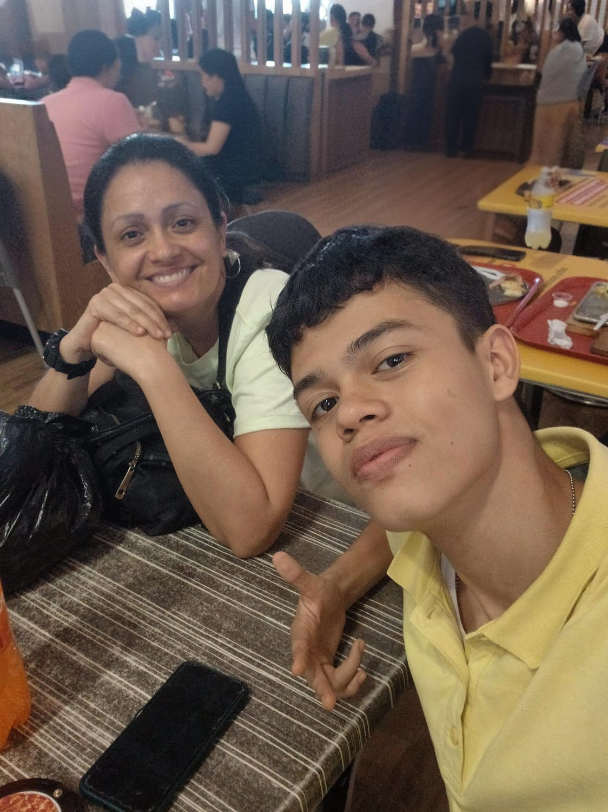

La idea de este proyecto surge de mi interés por crear algo innovador como parte de mi formación en desarrollo de software en el programa Talento Tech. Decidí realizar esta página web para mi mamá, quien es la fundadora y creadora de la papelería M&M. El negocio empezó como un hobby durante la pandemia, pero con el tiempo ha crecido y ahora es ella quien lleva todas las labores del negocio.
Como estudiante de desarrollo de software, aprovechar esta oportunidad para crear una página web real fue la mejor decisión. De este modo, puedo aplicar lo que aprendo a proyectos que realmente tienen un impacto. Esta página es solo un pequeño homenaje a mi mamá, quien inspira todo lo que hago en este proyecto.
Mi mamá, Carolina Medina Sastoque, comenzó este negocio durante la pandemia como una forma de mantener viva la creatividad y el entusiasmo por el trabajo. Con el tiempo, el negocio ha crecido y, hoy en día, es ella quien sigue operando la papelería, sirviendo a la comunidad con productos y servicios de calidad.
Juan David Martinez Medina soy estudiante de desarrollo de software y este proyecto forma parte de mi formación en Talento Tech. Decidí crear una página web funcional y atractiva para el negocio de mi mamá, utilizando tecnologías modernas como HTML, CSS, y JavaScript. Mi objetivo es aprender, mejorar mis habilidades y, al mismo tiempo, brindar a mi mamá una herramienta útil para su negocio.